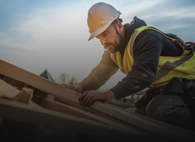
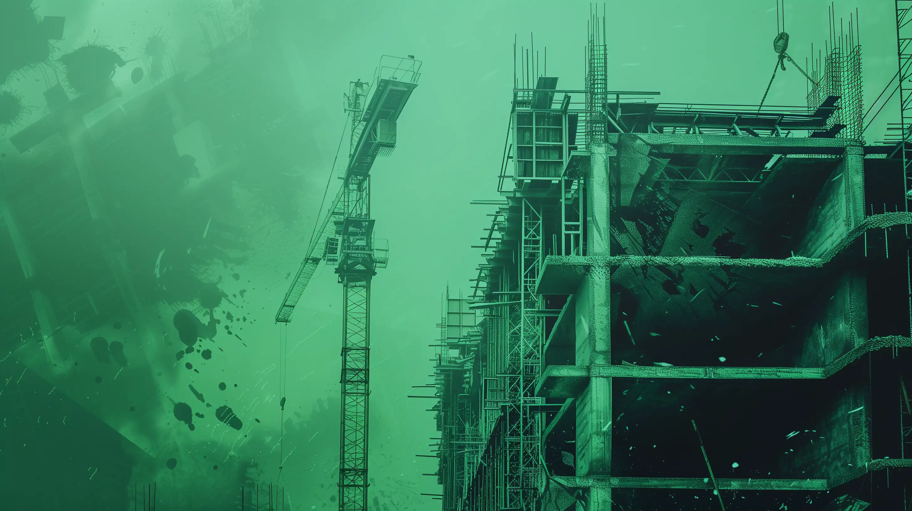
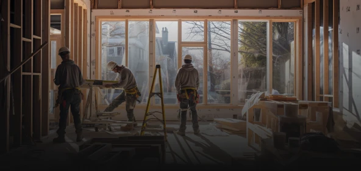

Demolição controlada
Desmonte mecanizado e manual com plano de ataque calculado e entorno protegido.
Novo Horizonte · Engenharia & Demolição
Demolir é o primeiro passo da construção. Desconstruímos estruturas com telemetria sísmica, segurança inviolável e economia circular — preparando a fundação para o que vem a seguir.
01 — Manifesto
A demolição tradicional enxerga ruína e entulho. A Novo Horizonte enxerga renovação tectônica, precisão matemática e economia circular.
Resíduos reciclados
Telemetria sísmica
Ângulos de corte
Norma
Cada impacto é milimetricamente calculado através de telemetria sismográfica de ponta. Cada viga desconstruída respeita a integridade do entorno urbano e a segurança inviolável dos nossos operadores. Existimos para transformar obsolescência em terra fértil para novos marcos da engenharia brasileira. Não apagamos a história; preparamos as fundações para que o amanhã seja erguido com solidez.
02 — Conceito
02.1 — Três tempos
A · Massa
Sólida, fechada, completa. O ponto de partida de toda obra de desconstrução.
B · Desconstrução
Retira-se exatamente um quadrante — 25% da massa — sem dano ao entorno.
C · Horizonte
No vazio nasce um arco verde: o ciclo que se renova a cada fundação.
03 — Serviços
Desmonte mecanizado e manual com plano de ataque calculado e entorno protegido.

03.2Laudos, escoramentos e projetos de desmonte assinados por responsável técnico.
 03.3
03.3
Triagem na origem, reciclagem e destinação rastreada. Até 94% dos resíduos reaproveitados.

03.4Monitoramento contínuo de vibração e recalque em edificações vizinhas, com relatórios em tempo real.

03.5Alvarás, PGRCC e licenças conduzidos do protocolo à entrega do laudo final.
04 — Método
Vistoria técnica, levantamento estrutural e mapeamento de riscos do entorno.
Vistoria · Cadastro · ARTSequência de ataque, escoramentos e cronograma derivados do cálculo — nada é feito a olho.
Plano de ataque · CronogramaAlvarás, plano de gerenciamento de resíduos e licenças ambientais em dia antes do primeiro impacto.
Alvará · PGRCC · LicençasEquipe com EPIs completos e telemetria sísmica ativa durante toda a operação.
NR-18 · Telemetria 24/7Triagem, reciclagem e transporte rastreado. O entulho volta à cadeia como matéria-prima.
Triagem · CTR · ReciclagemTerreno limpo, relatório de telemetria e laudo final assinado. A fundação está pronta.
Laudo · As-built · Entrega05 — FAQ
Reunimos as perguntas mais comuns sobre demolição, segurança e resíduos. Se não encontrar o que procura, fale direto com a nossa engenharia.
Demolições totais e parciais de edificações residenciais, comerciais e industriais, além de desmontes técnicos em áreas urbanas densas.
Com vistoria cautelar prévia, escoramentos calculados e telemetria sísmica ativa, que monitora vibração e recalque durante toda a operação.
Triamos os resíduos na origem e destinamos a recicladoras licenciadas, com rastreio por CTR. Nossa meta é reaproveitar até 94% do material.
Sim. Conduzimos alvará de demolição, plano de gerenciamento de resíduos e licenças ambientais, com responsável técnico registrado no CREA.
Operamos segundo a NR-18, com equipe treinada e EPIs completos. A segurança visível é parte do nosso método, não um detalhe.
Terreno limpo e nivelado, relatório de telemetria, comprovantes de destinação dos resíduos e laudo técnico final assinado.
06 — Contato
Conte o que precisa ser desconstruído. Nossa engenharia responde com uma proposta técnica e um cronograma.